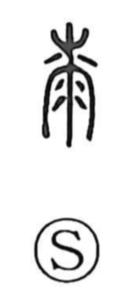

漆

Uncategorized
Kun: urushi | On: shitsu
lacquer ・ to lacquer ・ varnish
Explanation
漆 is a phono-semantic character. Its inner element carries the on reading shitsu and, in the oldest forms, depicts lacquer sap running from a cut in a tree’s bark—the original graph for lacquer. Because it signifies a liquid, the water element was added, yielding the current form with the sense of liquid lacquer and moistening. As lacquer is applied with a brush, there is also a related form that combines the idea of lacquer with the image of brush hairs, used for the verb “to lacquer.” Lacquer is a distinctive product of East Asia: inventories from the Zhou period already list vermilion-lacquered bows and arrows (彤弓, 彤矢) as well as black-lacquered ceremonial sets, and Han-era archaeological finds frequently include lacquerware.